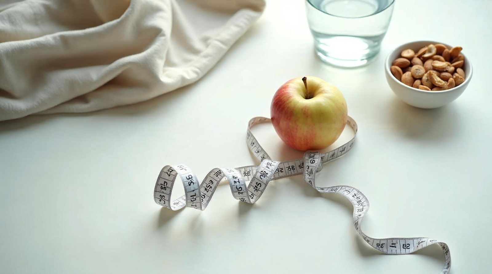
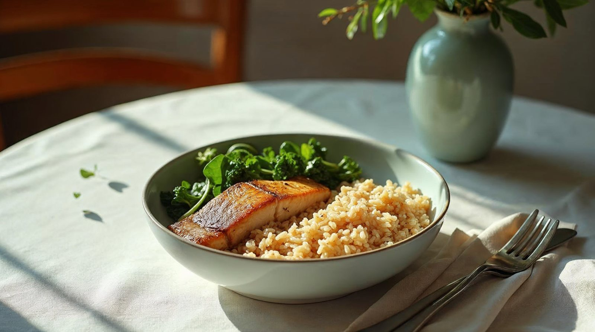
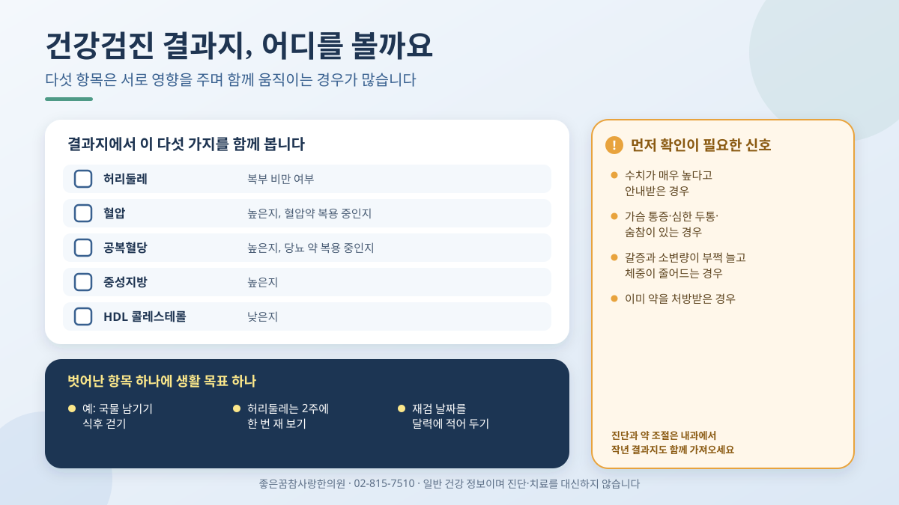

이종호 한의사 감수좋은꿈참사랑한의원 대표원장 (한의사 면허번호 19769)발행 2026-11-22 · 수정 2026-11-26
이 글의 차례
우편함에서 두툼한 검진 결과 봉투를 꺼내 식탁 위에 올려 두고, 한동안 열지 못하셨다는 분이 계십니다. 막상 펼쳐 보면 영어 약자와 숫자, 빨간 표시와 '경계', '주의' 같은 글자가 줄지어 있어 어디부터 봐야 할지 막막해집니다.
저는 그 막막함이 당연하다고 생각합니다. 검진 결과지는 생각보다 친절하지 않은 문서입니다. 대사증후군은 허리둘레, 혈압, 공복혈당, 중성지방, HDL 콜레스테롤 다섯 가지 가운데 몇 개가 기준을 벗어났는지로 봅니다. 어떤 항목을 보는지만 알아도 불안이 조금 가라앉고, 생활에서 무엇부터 바꿀지도 정하기 쉬워집니다.
결과지를 들고 오시는 마음
진료실에서 이런 말씀을 자주 듣습니다. "원장님, 이거 큰일 난 건가요?" 결과지를 내미는 손에 걱정이 묻어 있습니다. 어떤 분은 반대로 "작년에도 이 정도였는데 괜찮겠죠?" 하고 웃으시지만, 그 웃음 끝에도 조금은 마음이 쓰이는 게 보입니다.
저는 결과지를 받으면 먼저 한 장씩 같이 넘겨 봅니다. 그리고 빨간 표시가 있는 곳에 연필로 작게 동그라미를 칩니다. 몇 개인지 세어 보면 막연했던 걱정이 '이 세 가지'라는 구체적인 이야기로 바뀝니다. 걱정은 덩어리로 있을 때 가장 무겁습니다. 하나씩 나누어 놓으면 들고 갈 만해집니다.

대사증후군에서 보는 다섯 가지
대사증후군은 하나의 병 이름이라기보다, 몇 가지 대사 신호가 한 사람에게 함께 모여 있는 상태를 부르는 말에 가깝습니다. 결과지에서 보는 항목은 다섯 가지입니다.
- 허리둘레: 배 둘레에 지방이 많이 쌓였는지
- 혈압: 높거나 혈압약을 드시는지
- 공복혈당: 높거나 당뇨 약을 드시는지
- 중성지방: 높은지
- HDL 콜레스테롤: 낮은지
이 가운데 세 가지 이상이 기준을 벗어나면 대사증후군으로 봅니다. 우리나라에서 흔히 쓰는 기준은 허리둘레 남자 90cm, 여자 85cm 이상, 혈압 130/85mmHg 이상, 공복혈당 100mg/dL 이상, 중성지방 150mg/dL 이상, HDL 콜레스테롤 남자 40mg/dL 미만, 여자 50mg/dL 미만입니다.
다만 기준은 지침에 따라 달라질 수 있으니 참고로만 보시고, 검진 결과지의 안내와 의사의 설명을 우선하세요.
HDL 콜레스테롤은 다른 항목과 달리 '낮을 때' 표시가 된다는 점을 헷갈려하시는 분이 많습니다. 흔히 좋은 콜레스테롤이라고 부르는 것이라, 이 숫자는 너무 낮지 않은 쪽을 봅니다. 결과지를 보실 때 이것 하나만 기억하셔도 덜 헷갈리실 겁니다.
왜 이 다섯 가지를 함께 볼까요
허리둘레, 혈압, 혈당, 중성지방, HDL 콜레스테롤은 따로따로 떨어진 숫자가 아닙니다. 뱃살이 늘면 혈당 조절이 어려워지기 쉽고, 늦은 식사와 음주는 중성지방과 혈압에 함께 영향을 줄 수 있습니다.
활동이 줄고 잠이 모자라면 여러 항목이 한꺼번에 흔들리기도 합니다. 그래서 한 항목만 들여다볼 때보다 다섯 가지를 함께 볼 때 그 사람의 생활 흐름이 더 잘 보입니다.
저는 이 다섯 숫자를 한 사람의 하루가 남긴 발자국처럼 봅니다. 몇 시에 저녁을 드셨는지, 회식이 일주일에 몇 번인지, 몇 시간 주무시는지, 하루에 얼마나 걸으시는지가 숫자 안에 조금씩 묻어 있습니다. 숫자를 바꾸려면 결국 그 하루를 들여다봐야 합니다.
자주 듣는 오해들
"저는 살이 안 쪘는데요." 체중이 정상이면 대사증후군과 상관없다고 생각하기 쉽습니다. 그런데 체중은 보통이어도 허리둘레나 중성지방이 기준을 벗어나는 경우가 있습니다. 팔다리는 가는데 배만 나온 체형이라면 더 그렇습니다.
"하나만 걸렸으니 괜찮죠?" 하나만으로는 대사증후군이 아닌 것이 맞습니다. 하지만 경계선 가까이에 걸친 항목이 두세 개라면, 지금이 생활을 돌아보기 좋은 때라고 말씀드립니다. 결과지의 '정상'과 '경계' 사이는 생각보다 가깝습니다.
결과지를 한 해 것만 보시는 것도 아쉽습니다. 저는 가능하면 지난해, 그 전해 결과지도 같이 가져와 달라고 부탁드립니다. 올해 숫자 하나보다 3년 동안 어느 쪽으로 움직였는지가 훨씬 많은 것을 알려 주기 때문입니다. 그리고 약을 드시기 시작했다고 생활은 상관없다고 여기시는 분께는, 약과 생활 관리는 함께 가는 것이라고 말씀드립니다.
진료실에서 자주 만나는 모습들
어느 한 분의 이야기는 아니고, 진료실에서 비슷하게 자주 보는 모습들을 모아 보았습니다.
허리둘레와 중성지방 두 항목에 표시가 된 40대 직장인이 계십니다. 회식이 잦고, 집에 오면 늦은 시간에 야식을 드신다고 하십니다.
이런 분께 회식을 줄이라고 하는 것은 현실적이지 않을 때가 많습니다. 그래서 먼저 일주일 동안 회식과 야식 횟수를 적어 보시고, 회식이 없는 날 저녁 식사 뒤 15분 걷기 하나를 정합니다. 회식 날에는 국물 안주보다 구이나 채소 안주를 먼저 고르는 정도로만 이야기합니다.
혈압과 공복혈당이 경계에 걸린 어르신도 자주 뵙습니다. "나이 들면 다 그런 거 아니에요?" 하고 담담하게 말씀하십니다. 저는 그 담담함도 귀하다고 생각합니다. 다만 국물과 간식처럼 가장 자주 드시는 것 하나만 먼저 바꿔 보시자고 하고, 내과 재검 날짜를 달력에 같이 적어 드립니다.
체중은 보통인데 HDL 콜레스테롤만 낮게 나온 분도 계십니다. 이런 분은 결과지를 보고 고개를 갸웃하십니다. 하루 활동량과 잠을 여쭤보면 하루 대부분을 앉아서 보내고 걷는 시간이 거의 없는 경우가 많습니다. 그래서 걷는 시간을 조금씩 늘리는 계획부터 같이 세웁니다.
먼저 이렇게 여쭙니다
결과지를 같이 보며 저는 대략 이런 순서로 여쭙니다.
- 어떤 항목이 기준을 벗어났는지, 지난해와 비교하면 어떤지
- 식사 시간과 야식, 음주는 어떤지
- 하루 활동량과 잠은 어떤지, 복용 중인 약은 있는지
- 결과지를 받고 따로 재검이나 상담을 받으셨는지
받지 않으셨다면 그 이유도 듣고 싶습니다. 바빠서였는지, 무서워서였는지에 따라 제가 드릴 말씀도 달라지니까요.
결과지를 받은 뒤 해 볼 수 있는 것
결과지 봉투는 서랍 깊숙이 넣지 마시고, 냉장고 옆이나 책상 위처럼 눈에 띄는 곳에 한동안 두셨으면 합니다. 보기 싫은 숫자일수록 자꾸 눈에 들어와야 생활이 조금씩 따라 움직입니다. 가족과 함께 보시는 것도 좋습니다. 밥상을 같이 차리는 사람이 내 숫자를 알면 반찬 한 가지가 달라지기도 합니다.
결과지를 받으셨다면 이렇게 해 보시면 좋겠습니다. 먼저 기준을 벗어난 항목에 형광펜으로 표시를 해 두세요. 그리고 그 항목 하나에 맞는 생활 목표 하나만 정합니다.
혈압이 걸렸다면 국물 절반 남기기, 공복혈당이 걸렸다면 식후 10~15분 걷기, 중성지방이 걸렸다면 야식이나 음주 횟수 줄이기, 허리둘레가 걸렸다면 저녁 식사를 조금 이르게 당기기처럼요. 다섯 가지를 한꺼번에 바꾸려고 하면 대개 열흘을 넘기기 어렵습니다.
허리둘레는 집에서도 재 볼 수 있습니다. 아침 공복에 숨을 편하게 내쉰 상태에서, 갈비뼈 맨 아래와 골반 윗부분의 가운데쯤을 줄자로 재면 됩니다. 2주에 한 번, 같은 조건에서 재서 적어 두시면 흐름이 보입니다. 마지막으로 재검 날짜를 달력이나 휴대폰에 꼭 적어 두세요. 결과지를 서랍에 넣고 나면 생각보다 빨리 잊힙니다.
결과지에서 함께 보면 좋은 다른 숫자들
대사증후군의 다섯 가지 말고도 결과지에는 같이 눈여겨볼 숫자들이 있습니다. 체질량지수는 키와 몸무게로 계산한 값인데, 허리둘레와 함께 보면 체중은 보통이지만 배 쪽에 지방이 몰린 경우를 짐작해 볼 수 있습니다. LDL 콜레스테롤과 총콜레스테롤은 대사증후군 기준에는 들어가지 않지만, 혈관 건강을 이야기할 때 함께 보는 항목입니다.
간 기능 수치라고 부르는 AST, ALT, 감마지티피도 결과지 한쪽에 있습니다. 음주나 뱃살과 함께 움직이는 경우가 있어서, 저는 이 숫자를 보면 술자리 횟수와 저녁 식사 시간을 한 번 더 여쭙니다.
요산이나 소변 검사의 당 표시가 있는 분도 계십니다. 이런 숫자들의 의미는 사람마다 다르게 읽힐 수 있으니, 해석과 추가 검사는 검진 기관이나 내과의 설명을 따르시면 됩니다. 저는 그 숫자들이 생활의 어느 부분과 이어져 있을지를 함께 짚어 드리는 쪽입니다.
작년과 숫자가 달라졌을 때
"작년엔 정상이었는데 올해 갑자기 걸렸어요." 이런 말씀을 들으면 저는 먼저 검사 전날의 이야기를 여쭙습니다. 전날 저녁을 몇 시에 드셨는지, 술을 드셨는지, 잠은 잘 주무셨는지, 검사장까지 급하게 뛰어오지는 않으셨는지요.
공복 시간이 짧았거나 전날 늦게 술을 드셨다면 중성지방과 혈당이 평소보다 높게 나올 수 있습니다. 혈압은 긴장하거나 서둘러 오신 날 더 높게 나오기도 합니다.
그렇다고 숫자를 가볍게 넘기자는 이야기는 아닙니다. 조건이 달랐을 수 있다는 점을 알고, 같은 조건에서 다시 확인해 보자는 뜻입니다. 반대로 해마다 조금씩, 한 방향으로 꾸준히 움직이는 숫자는 그 자체로 귀한 정보입니다. 한 해의 숫자에 놀라기보다, 몇 해의 흐름을 차분히 보는 쪽이 마음에도 판단에도 도움이 됩니다.
내과 상담 때 여쭤보면 좋은 것
결과지를 들고 내과에 가시면, 짧은 진료 시간에 무엇을 물어야 할지 몰라 그냥 나오셨다는 분이 많습니다. 저는 미리 메모지에 질문 서너 개를 적어 가시라고 권합니다.
지금 숫자가 약이 필요한 범위인지, 아니면 생활을 바꾸며 지켜볼 범위인지. 다음 재검은 언제쯤이 좋은지. 추가로 해 볼 검사가 있는지. 집에서 혈압이나 혈당을 재면 도움이 되는지. 이 정도만 여쭤보셔도 다음에 무엇을 해야 할지가 훨씬 또렷해집니다.
들은 대답은 결과지 여백에 바로 적어 두세요. 집에 돌아오면 생각보다 금방 잊힙니다. 그 메모를 가지고 저희 한의원에 오시면, 내과에서 정한 방향 안에서 생활을 어떻게 바꿀지 함께 이야기하기가 훨씬 쉬워집니다. 서로 다른 곳에서 받는 진료가 한 사람의 하루 안에서 엇갈리지 않도록 이어 드리는 것도 제가 마음 쓰는 일입니다.

혼자 들여다보기 무서우실 때
결과지를 펼치기조차 겁이 난다는 분도 계십니다. 부모님이 비슷한 병으로 고생하시는 모습을 보셨다면 더 그렇습니다. 그 두려움은 몸을 아끼는 마음에서 나온다고 생각합니다. 혼자 인터넷을 찾아보다 더 불안해지셨다면, 결과지를 그대로 들고 오셔도 됩니다. 한 장씩 같이 넘기다 보면, 걱정했던 것보다 할 수 있는 일이 많다는 걸 알게 되시는 경우가 많습니다.
한의원에서 함께 살필 수 있는 경우
이런 분들과는 이야기해 볼 것이 많습니다.
- 식사 시간이 불규칙하고 먹는 양을 조절하기 어려운 분
- 식후 졸음과 더부룩함이 함께 있는 분
- 몸이 쉽게 붓고 기운이 떨어진다는 분
식욕이 몰리는 시간, 식사 속도와 소화, 순환과 잠이 어떻게 이어지는지를 같이 살핍니다. 수치를 바꿔 드리겠다는 약속이 아니라, 숫자 뒤에 있는 하루를 함께 다시 짜 보는 일입니다.
처음 오시면 이렇게 진료합니다
좋은꿈참사랑한의원에 처음 오시면 저는 결과지를 함께 펼쳐 놓고 어떤 항목이 몇 개 벗어났는지 표시합니다. 그다음 식사, 잠, 활동, 스트레스, 복용 약을 차례로 여쭙고, 양손을 올려 달라고 말씀드린 뒤 두 손목의 맥을 짚습니다.
맥을 보는 동안 잠은 잘 드시는지, 자다가 깨시는지, 식사 뒤 속은 편한지, 몸이 찬 편인지 더운 편인지를 여쭙니다. 결과지 이야기로 오셨는데 잠과 소화를 묻는 게 의아하실 수도 있습니다. 저에게는 그 대답이 숫자를 읽는 데 꼭 필요한 배경입니다.
필요하다고 판단되면 인바디 770으로 체성분을, 원내 당화혈색소나 혈액 검사로 지금의 흐름을 기록해 두고, 혀와 배를 살피기도 합니다. 그 뒤 생활 목표와 함께 침이나 한약 상담을 상태에 맞춰 정하고, 재검과 약은 내과에서 받으시도록 안내합니다. 다시 오시면 같은 조건에서 다시 재어 비교하고, 정해 둔 목표가 어땠는지부터 이어서 여쭙니다.
얼마나 지켜보고, 언제 내과에 가야 할까요
생활 목표 하나를 정하셨다면 적어도 한 달은 이어 가 보세요. 재검 시기는 검진 기관이나 내과에서 안내한 간격을 따르시면 됩니다. 혈압이나 혈당이 매우 높게 나왔다는 안내를 받으셨거나, 갈증과 소변량이 갑자기 늘고 체중이 빠진다면 기다리지 마시고 내과 진료를 먼저 받으세요.
이렇게 기록해 오시면 상담이 쉬워집니다
가능하면 2~3년치 검진 결과지, 복용 중인 약 목록, 일주일 동안의 식사 시간과 야식·음주 횟수, 허리둘레를 잰 날짜와 수치를 가져와 주세요. 다 없어도 괜찮습니다. 올해 결과지 한 장만 들고 오셔도 거기서부터 시작할 수 있습니다.
이런 증상은 먼저 확인이 필요합니다
- 검진에서 수치가 매우 높다고 안내받은 경우
- 가슴 통증이나 심한 두통, 숨참이 있는 경우
이런 신호가 있으면 한의원보다 가까운 병원이나 응급실을 먼저 찾으세요.
결과지 속 빨간 표시는 꾸중이 아니라 안내판에 가깝다고 생각합니다. 어디로 가면 좋을지 알려 주는 표시요. 그 안내판을 같이 읽어 드리는 것, 그리고 다음 결과지를 받으실 때까지 그 길을 함께 걸어 드리는 것이 제가 할 수 있는 일입니다.
함께 읽으면 좋은 글
- 건강검진 혈액검사 결과지를 가져가면 무엇을 같이 보나요?
- 체중은 보통인데 복부 지방이 걱정될 때는 어떤 검진을 보나요?
- 건강검진에서 중성지방이 높다고 했을 때

여쭙는 것
- 어떤 항목이 기준을 벗어났는지, 지난해와 비교하면 어떤지
- 식사 시간과 야식, 음주는 어떤지
- 하루 활동량과 잠은 어떤지, 복용 중인 약은 있는지
한의원에서 함께 살필 것
- 식사 시간이 불규칙하고 먹는 양을 조절하기 어려운 분
- 식후 졸음과 더부룩함이 함께 있는 분
- 몸이 쉽게 붓고 기운이 떨어진다는 분
먼저 확인이 필요한 신호
- 검진에서 수치가 매우 높다고 안내받은 경우
- 가슴 통증이나 심한 두통, 숨참이 있는 경우
한눈에 보는 표
| 구분 | 핵심 |
|---|---|
| 여쭙는 것 | 어떤 항목이 기준을 벗어났는지, 지난해와 비교하면 어떤지 식사 시간과 야식, 음주는 어떤지 |
| 한의원에서 함께 살필 것 | 식사 시간이 불규칙하고 먹는 양을 조절하기 어려운 분 식후 졸음과 더부룩함이 함께 있는 분 |
| 먼저 확인이 필요한 신호 | 검진에서 수치가 매우 높다고 안내받은 경우 가슴 통증이나 심한 두통, 숨참이 있는 경우 |
자주 묻는 질문
항목이 하나만 걸려도 대사증후군인가요?
아니요. 다섯 가지 가운데 세 가지 이상이 기준을 벗어나야 대사증후군으로 봅니다. 다만 한 가지라도 생활을 점검해 볼 좋은 신호로 받아들이시면 좋겠습니다.
결과지를 가져가야 하나요?
네, 최근 검진 결과지와 복용 약 목록을 가져오시면 상담에 도움이 됩니다. 지난해 결과지도 있으면 흐름을 비교하기 좋습니다.
한의원 진료로 수치가 좋아지나요?
수치 개선을 약속드리지 않습니다. 식사와 잠, 활동 같은 생활 리듬을 함께 살피고, 필요하면 내과 진료를 안내합니다.
대사증후군이라는 말을 들으면 바로 약을 먹어야 하나요?
약이 필요한지는 내과에서 정합니다. 한의원에서는 결과지를 함께 보며 생활에서 바꿀 것을 정하고, 필요하면 내과 진료를 안내합니다.
허리둘레는 집에서 어떻게 재나요?
아침 공복에 숨을 편하게 내쉰 상태에서 갈비뼈 맨 아래와 골반 윗부분의 가운데쯤을 줄자로 잽니다. 2주에 한 번 같은 조건에서 재서 적어 두시면 흐름을 보기 좋습니다.
좋은꿈참사랑한의원은 재진 때 지난번 이야기부터 이어서 여쭙니다. 진료시간과 예약은 오시는 길에서 확인하세요.
어디서 상담받을 수 있나요?
좋은꿈참사랑한의원은 서울 동작구 만양로2길 2 신성빌딩 3층·5층(서울 동작구 상도동, 7호선 상도역 3번 출구 근처)에 있습니다. 한의사 3명(이종호 대표원장, 조영기 수석진료원장, 정원영 진료원장)이 진료합니다. 진료시간은 평일 09:30~20:00(점심 13:00~14:00), 토·일·공휴일 09:30~15:00이며, 방문 전 전화로 확인을 권합니다. 예약은 네이버 예약, 카카오톡 상담, 전화 02-815-7510로 받습니다.
이 글은 일반적인 건강 정보이며 개인의 진단이나 치료를 대신하지 않습니다. 증상이 있거나 복용 중인 약이 있다면 진료를 통해 확인하세요. 치료 효과는 개인마다 다를 수 있습니다.
작성 기준: 일반적으로 알려져 있는 건강 정보를 참고해 정리했습니다(대표원장 감수). 증상 기록은 1~2주 동안 하루 1회, 비슷한 시간에 적어 오시면 지난 상태와 비교하기 쉽습니다.